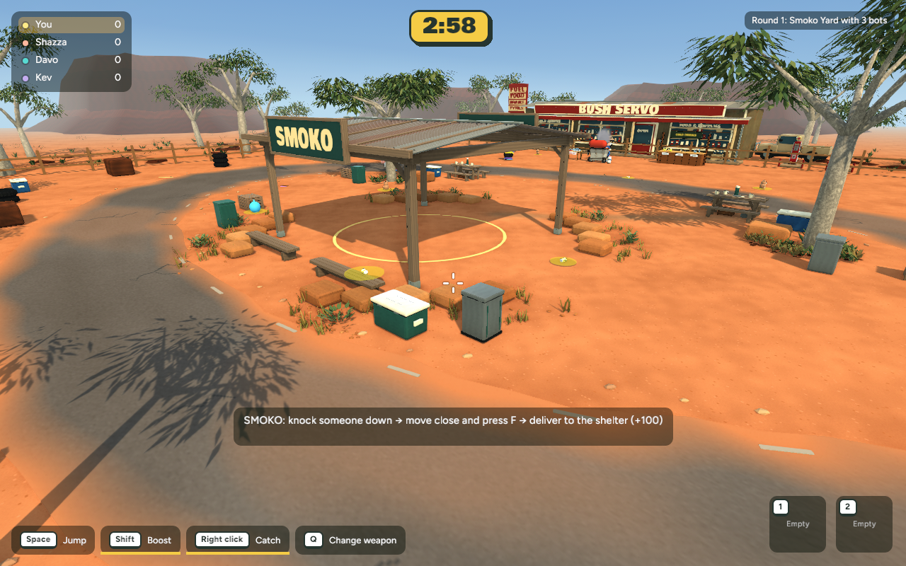
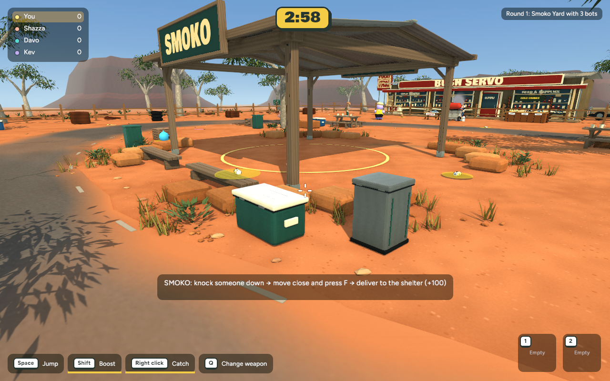
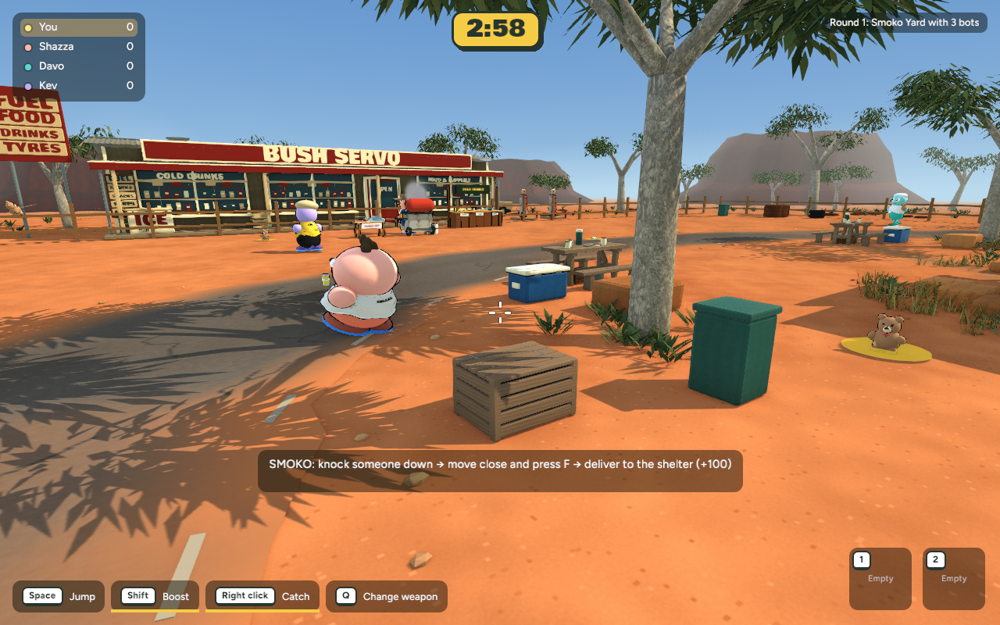
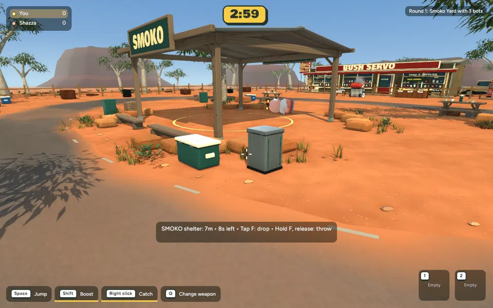
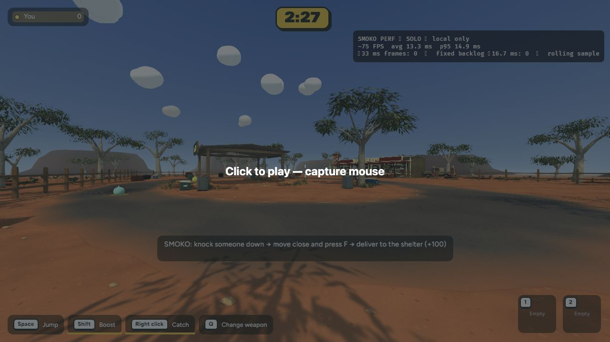
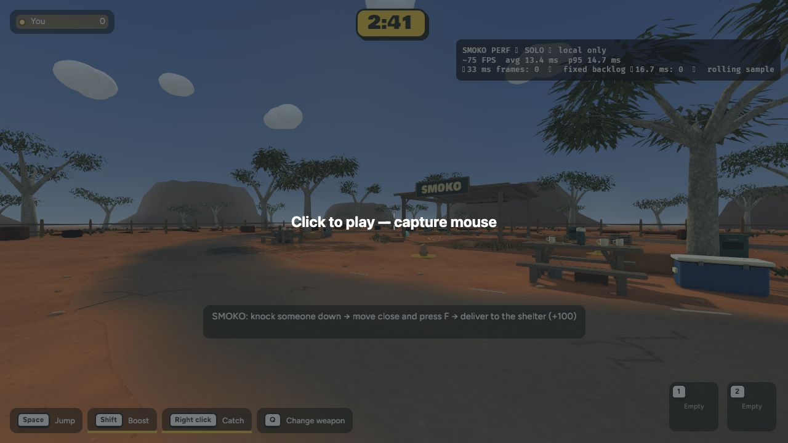

Gameplay view


Actual running game · 7 November 2026 · ready for review, not published
Local chipped sandstone, embedded gravel, a softer dust transition and three timber supply crates built in Blender. Roads, spawn points and delivery routes remain clear.



Three static crates with matching collision, using existing materials.

75 actual game frames. Smoko delivery awarded +100; no carried player left attached.
692 tests passed, 1 ignored. Native and browser builds passed. Native matched mean: close 8.594→8.547 ms; gameplay 8.506→8.630 ms. No meaningful regression in these samples. No new textures; +10,152 triangles and one material batch.


Browser views use different random spawn cameras and retain the mouse-capture overlay. These are stationary loading/rendering checks, not a full multiplayer test.
Full checkpoint, changed files and recovery instructions
To test: Solo game → Bush Servo → Play Smoko.
cd /Users/marcus/Claude/australian-bbq/rust
~/.cargo/bin/cargo run -p bbq_app --release -- --menu